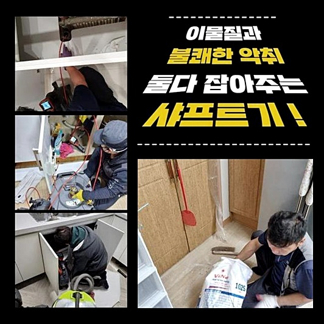
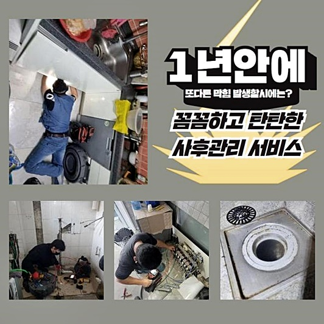
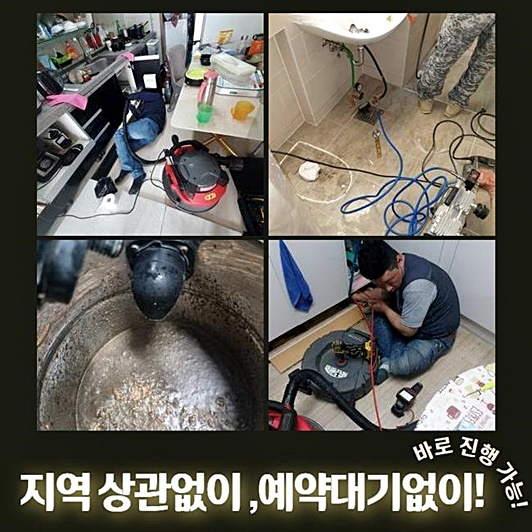
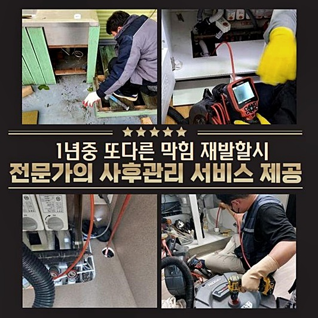
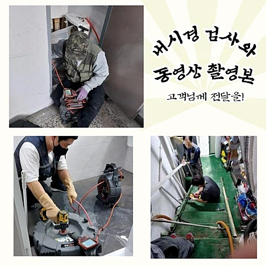
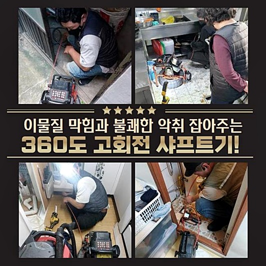

🏠 용인 죽전동싱크대뚫음 상현동 수리업체
용인 죽전 싱크대막힘 전문 시공 후기

📋 작업 개요
- 위치: 용인 죽전, 죽전, 용인
- 서비스 유형: 싱크대막힘, 하수구막힘, 배관막힘, 집수정막힘, 누수수리, 역류해결, 뚫는업체, 배관청소, 고압세척, 설비공사
- 작업 일시: 2024. 6. 19. 16:55
- 업체명: 하수구수사대 (010-5615-2118)
🔍 문제 상황
용인 죽전동싱크대뚫음 상현동 수리업체
하수구가 막혔을시 당사자분들께서는 어떤방법을 통해서 뚫어보려고 하시는지 궁금한데요
대부분이라면 셀프조치로 처리하고자 하시는데요
배수구가 막혔을땐 신속하게 대처하여 해결해보는게 좋은방법인데요
해결하지않고 방치한다면 이차적인 문제로인해 역류증세나 누수증상이 이어지게되어 현상을 처리하기가 어려워질겁니다
누수나역류가 이미발현됐으면 세밀한작업이 요구됩니다
방문한곳은 하수도가 역류하게되어 저희업체에게 연락주셨죠
외부하수구쪽에서 물이넘쳐버린 상황이었죠 안쪽에서 발현되지않은것을 다행인것이라고 생각해야할지 모르겠지만 외부배관이 역류하게되면 전문적인 장비들이 요구되는데요
다양한현장에서 수리를진행한 곳을통해 해결해보셔야합니다
고객분이 설명해주신 상태가 심각하다고 판단되었기에 최첨단기계를 구비하여 현장장소로 급하게 방문드렸어요
역류하고있던 외부하수구와 다양한배관들을 검사했죠

🔎 원인 분석
💡 전문가 진단: 정밀 진단 장비를 사용하여 슬러지의 고착 여부를 판명하고 타격/세척 작업을 실시했습니다.
배관막힘을 제일우선으로 바로잡아야할 바깥쪽 하수도를 찾을수있었어요
뚫어내기전 하수관에 배관카메라로 체크해봤더니하수구카메라로 살펴보니 많은 이물로인해 막히게된것으로 확인했습니다
내시경기기로 오염물확인을 명확하게하기가 어려울정도였죠 그러므로 고압세척기계를 이용해 배관내부쪽을 세척해내기로했죠
하수구쪽으로 바로분사해 시도해보기보단 이물질들의 포커싱하여 세척했더니 일반적인기계로는 꺼내기힘든 여러이물이 빠져나왔죠
외부에있었던 하수구라서 그런지 나무뿌리처럼 보이는것들이 막히는증세를 발발시킨듯 상당한양들이 보였답니다
외부하수도의경우 나뭇가지들로 인해서 사고가터질수도 있기에 조심해야만해요
고압세척에 착수하여 이물질을제거하면 대다수가 흙이나 나무라는게 보인까닭에 더강한세기로 세척하게되었죠
보통 하수구에서 발견되는 이물은 기름기있는 종류들인데요
그렇지만 나뭇가지나 흙종류는 하수구벽에 접착되어있지 않았으며 상당량의 오염물이 들어가게되면서 굳게된 상태였어요
고압청소기로 이물의 가운데부분을 강력하게 뚫으면서 바깥으로 배출하고자 집중해서 작업했죠
높은수압의 힘을 자랑하고있는 고압세척도구로 제거하는데도 안쪽에는 더큰 덩어리들이 자리하고있는듯 확실히 뚫리지못했죠

🔧 작업 과정
확실한 해결을위해서 한번더 내시경을 집어넣어 어떤곳으로 공략해줘야 하는지 살펴보기로했죠
배수구입구 주변에서는 잔여물이 빠져나온상황이라 전과달리 시야가트이면서 오염물의 형태와종류를 선명히 확인할수있었죠
흙과뿌리가 뭉친이물을 제거해내면서 체크해보니 나무랑흙말고도 각종잔해물들이 연속해서 나오고있었습니다
처음상황과 다르게 상당량의 오염물질이 제거된상황이라 고객님도 나오신후 살피셨는데요
바깥쪽에있는 하수구에서 식물을심거나 잔여물질들이 유입되는것에 대하여 유의하셔야한다고 전해드렸어요
제거작업중 집수정하수구 깊은부분에서 큰덩어리를 발견했는데요
개방적이게 활용시되는 하수구이므로 잔해물이 유입되는것이 어렵지않았죠
나무뿌리뭉텅이가 하수구모양대로 자리잡고있다가 청소를진행하니 바깥으로 배출되었죠
끝에는 기름슬러지가 끈적히 굳은곳도 보였는데 내부에있는 하수구쪽에서 나무와흙들이 쌓이게되면서 하수구시스템을 망가뜨린걸로 보여집니다
외부관의 넓이자체가 큰편이라고 할수있는데 배관통로를 막아버릴만큼 거대한 오염물이었죠
고착물질을 제거한후에도 남겨진 잔해물들을 고압세척기로 모두제거하여 하수도를 깔끔히 비워드렸어요
집수정의 깊이가 깊다보니 번거로웠지만 손상발생이 없도록 배수관을 뚫을수있었죠
역류증세가 발생된배관을 점검해보면 예상치못한 이물질들을 보는일이 많은데요
막힘징조가 나타날때 곧바로 대처하신다면 고압청소기가 없다해도 간단히 처리할수있어요
막히는문제가 가벼운일이라고 생각하여 미룰수가있어도 결국엔 배관을 이용해야하기에 공사로까지 이어질수있다는점 알고계시는게 좋아요
단순막힘이나 어려운상황에 놓인경우에도 전문가에게 맡겨보시면 확실한 해결로 이어질수있어요
저희업체는 수리방식도 배관상태에 알맞는 작업만을 진행해드리므로 단순한막힘으로 막힘증상이 심하지않다면 간단한 작업으로도 해결가능하답니다


✅ 작업 완료
이번현장처럼 심한상황이라면 여러가지 장비들을 모두동원해 조치해드리고있죠
하수관내부는 두눈으로 체크하는것과 실제로 다르지만 그런부분까지도 내시경점검으로 고객분들께서도 확인할수있게 해드려 신뢰하시고 맡기셔도괜찮으니 편안한 마음으로 연락만주시면 되겠습니다
상가건물이 아니더라도 가정내에 하수구들도 해결할수있으니 문제를 보인다면 아무때나 전화주시길 바래요
1시간내로 어떤장소든 내방이 가능하기도하고 투명히 작업내용을 공개해드려요
빨간날에도 상담해드릴수있기에 전화만주신다면 상세한응대로 맞이하도록 할게요!



⚠️ 베란다 누수 및 방수 관리 방법
- ✅ 비가 많이 올 때 창틀 주변이나 아래층 천장에 얼룩이 생기는지 정기적으로 확인해 보세요.
- ✅ 우수관 주변 실리콘 마감이 들뜨거나 깨진 틈새가 있는지 손상 여부를 수시로 체크하세요.
- ✅ 베란다 바닥 타일의 줄눈(메지)이 소실되면 그 틈으로 물이 침투하여 누수가 유발됩니다.
- ✅ 누수 의심 증상 발견 시 방치하면 아래층 손실이 커지므로 즉시 전문가의 진단을 받으십시오.
💡 핵심 정리
- 확실한 장비 작업(내시경 점검 및 샤프트 스케일링)으로 원인을 뿌리 뽑습니다.
- 작업 후 1년 이내에 동일한 부위 재발 시 100% 무상 A/S 서비스를 보장합니다.
- 서울 · 경기 · 인천 전 지역에 24시간 언제든 긴급 출동할 수 있도록 항시 대기 중입니다.
❓ 자주 묻는 질문 (FAQ)
🚨 용인 죽전 싱크대막힘 문제로 고민이신가요?
정확한 원인 진단과 확실한 시공으로 재발 없는 해결을 약속드립니다.
24시간 긴급 출동 | 서울 · 경기 · 인천 전지역 | 1년 내 재발 시 무상 A/S